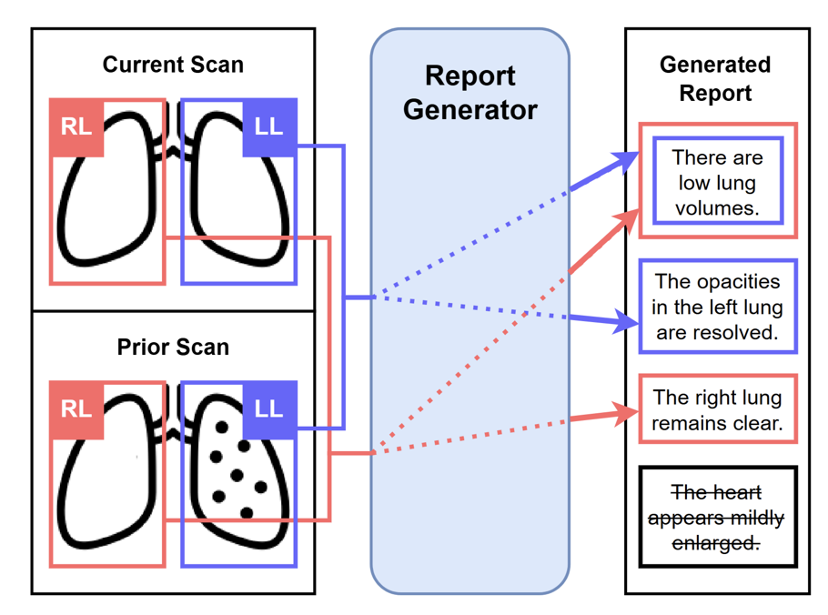
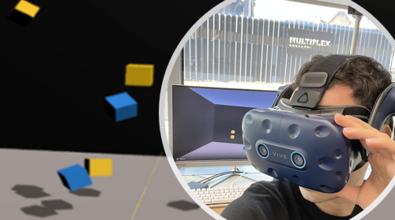

Projects - Selected Publications
Human Motion Analysis and Privacy Preservation
 |
Efficient Human Pose EstimationKnowledge Distillation with Global Filters for Efficient Human Pose EstimationK.B. Sivangi and F. Deligianni BMVC 2024 pdf, Project Page and Source Code By distilling knowledge from the teacher model, the student network learns to predict keypoints with high accuracy while maintaining lower computational complexity. This approach significantly advances the field by balancing efficiency and accuracy. We specifically employ Global Filter Layers, which operate in the frequency domain, to reduce the processing overhead associated with traditional attention mechanisms. Our method was evaluated using both static and dynamic filter weighting strategies, demonstrating that the Global Filter Layers not only improve speed but also maintain a competitive level of accuracy compared to traditional attention-based models. …read more |
 |
Privacy-Preservation in Radar-based HARDifferentially Private Integrated Decision Gradients (IDG-DP) for Radar-based Human Activity RecognitionI. Zakariyya, L. Tran, K.B. Sivangi, F. Deligianni, WACV 2025, accepted. pdf The advent of radar-based sensing systems has captured the spotlight for they are able to operate without physical contact and they can integrate with pre-existing Wi-Fi networks. They are also seen as less privacy-invasive compared to camera-based systems. However, recent research has shown high accuracy in recognizing subjects or gender from radar gait patterns, raising privacy concerns. This study addresses these issues by investigating privacy vulnerabilities in radar-based Human Activity Recognition (HAR) systems and proposing a novel method for privacy preservation using Differential Privacy (DP) driven by attributions derived with Integrated Decision Gradient (IDG) algorithm. |
Medical Image Analysis
 |
Semi-Supervised Medical Image SegmentationLearning Semi-Supervised Medical Image Segmentation from Spatial RegistrationQ. Liu, P. Henderson, X. Gu, H. Dai, WACV 2025, accepted. pdf We are the first to propose a registration-guided method for semi-supervised medical image segmentation, by integrating registration with a contrastive cross-teaching framework. Furthermore, we introduce a novel registration supervision loss that enhances cross-teaching, by providing additional and informative registered pseudo-labels early in training, automatically selecting the best registered volumes.more |
|  | Vision-Language Models for Chest X-Ray RadiologyControllable Chest X-Ray Report Generation from Longitudinal RepresentationsQ. Dalla Serra, C. Wang, F. Deligianni, J. Dalton, and A. Q. O'Neil, EMNLP 2023. WACV2025_arxiv, Project Page Radiology reporting is a time-consuming process, and scan results are often subject to delays. To enhance the accuracy and interpretability of current vision-language models for Chest X-Ray Radiology we leverage an existing visual input format of anatomical tokens. We introduce two novel aspects: (1) longitudinal representation learning – we input the prior scan as an additional input, proposing a method to align, concatenate and fuse the current and prior visual information into a joint longitudinal representation which can be provided to the multimodal report generation model; (2) sentence-anatomy dropout – a training strategy for controllability in which the report generator model is trained to predict only sentences from the original report which correspond to the subset of anatomical regions given as input. |
 |
Semi-Supervised Medical Image SegmentationCertainty-Guided Cross Contrastive Learning for Semi-Supervised Medical Image SegmentationQ. Liu, X. Gu, P. Henderson, BMVC 2023. BMVC2023_arxiv, Project Page and Source Code, Extended Version We develop a novel Multi-Scale Cross Supervised Contrastive Learning (MCSC) framework, to segment structures in medical images. We jointly train CNN and Transformer models, regularising their features to be semantically consistent across different scales. To tackle class imbalance, we take into account the prevalence of each class to guide contrastive learning and ensure that features adequately capture infrequent classes. |
 |
Fully Supervised Medical Image SegmentationOptimizing Vision Transformers for Medical Image SegmentationQ. Liu, C. Kaul, J. Wang, C. Anagnostopoulos, R. Murray-Smith, F. Deligianni, IEEE International Conference on Acoustics, Speech, and Signal Processing, 2023. paper We design of a compact and accurate Transformer network for Medical Image Semantic Segmentation, which introduces convolutions in a multi-stage design for hierarchically enhancing spatial and local modeling ability of Transformers. This is mainly achieved by our well-designed Convolutional Swin Transformer (CST) block which merges convolutions with Multi-Head Self-Attention and Feed-Forward Networks for providing inherent localized spatial context and inductive biases. |
Analysis of Neurophysiological Signals
|  | Building Machine Learning Models to Detect Cognitive WorkloadML-Driven Cognitive Workload Estimation in a VR-based Sustained Attention TaskD. Szczepaniak, M. Harvey, F. Deligianni, IEEE International Symposium on Mixed and Augmented Reality, 2024. paper, Project Page We employed machine learning techniques to enable real-time, personalized cognitive training. This work contributes to the development of more effective cognitive training interventions that can adapt to individual differences and maintain optimal engagement levels. |
 |
Computational Interfaces for Personalised Music-TherapyFusion of Spatial and Riemannian Features to Enhance Detection of Gait Adaptation Mental States During Rhythmic Auditory StimulationN. Lai-Tan, M. Philiastides, F. Deligianni, International Conference on Affective Computing and Intelligent Interaction (ACII 2024), Best Student Paper Runner-up Award, 2024. paper Fusion of Spatial and Riemannian Features to Enhance Detection of Gait Adaptation Mental States During Rhythmic Auditory Stimulation |
 |
12-Lead ECG Classification in Congenital Heart DiseaseRiemannian Prediction of Anatomical Diagnoses in Congenital Heart Disease based on 12-lead ECG'sM. Alkan, G. Veldtman, F. Deligianni, IEEE International Symposium on Biomedical Imaging (IEEE ISBI), 2024 arxiv, paper, code Here, we exploit the Riemannian geometry of the spatial covariance structure of the ECG signal to improve classification in extremely heterogeneous and small datasets. |